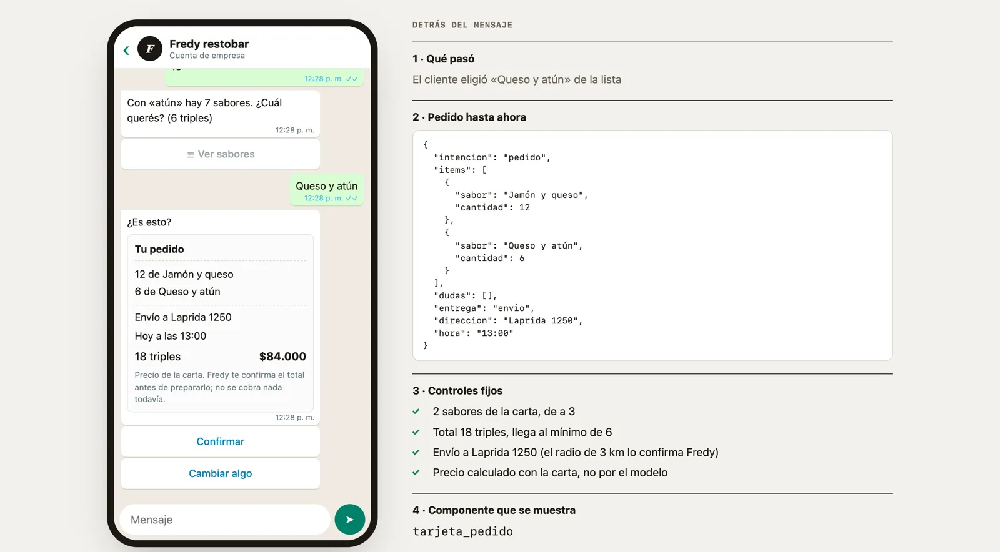
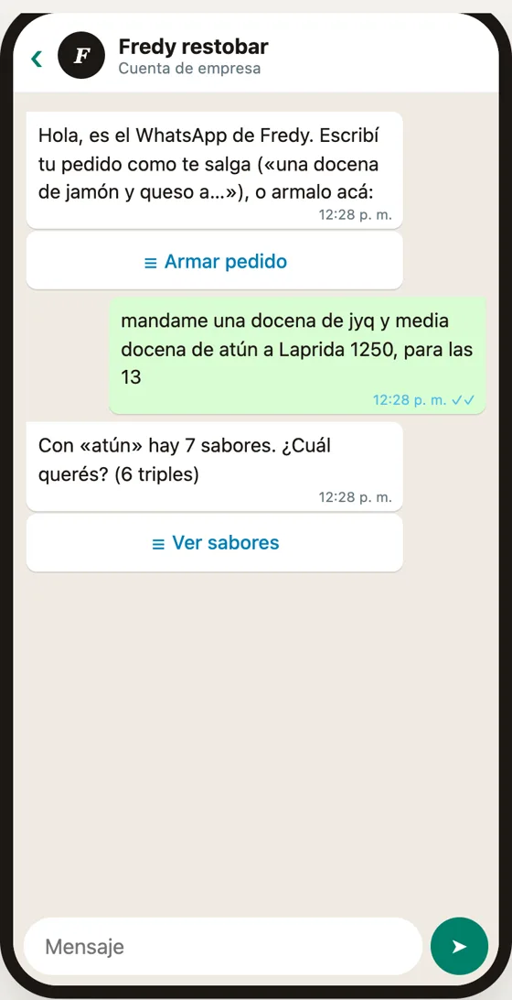
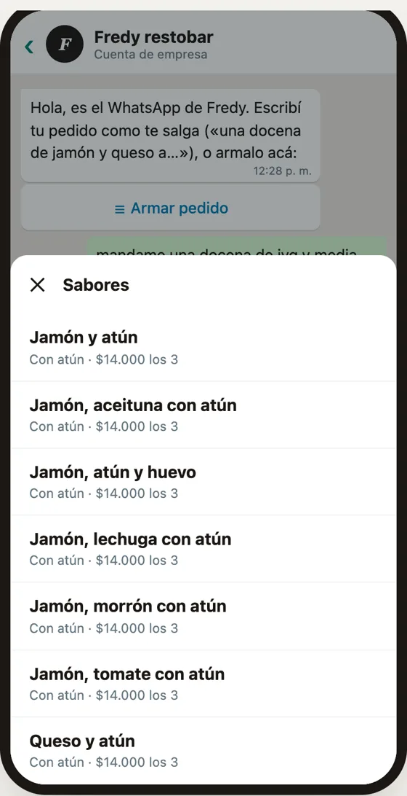
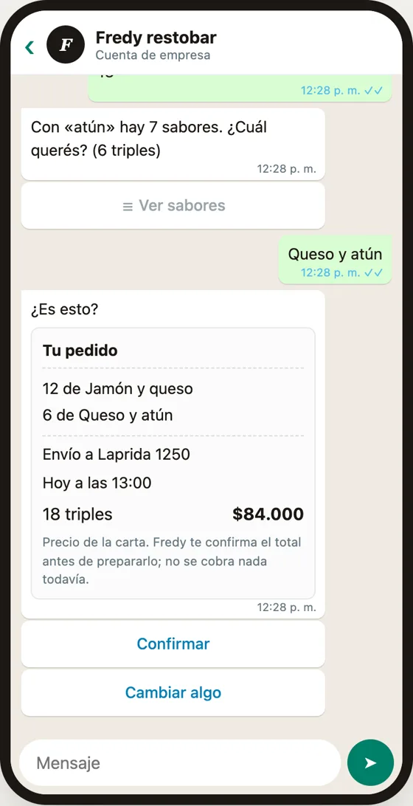
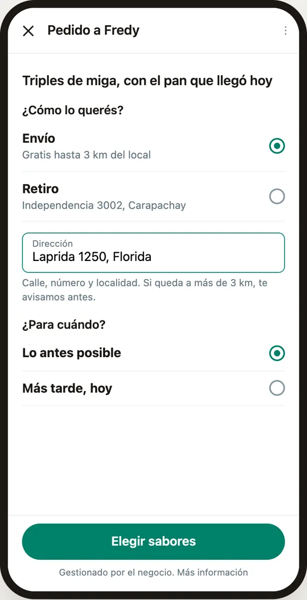
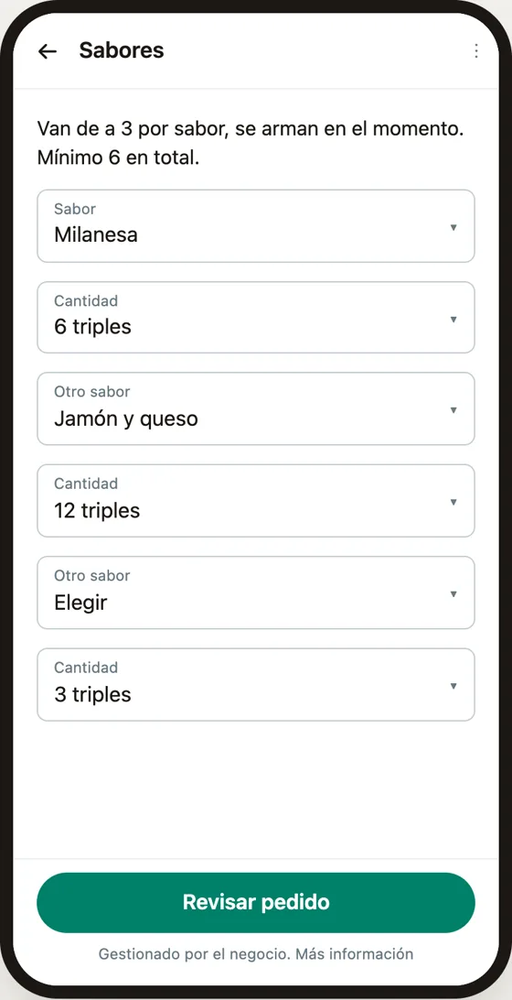
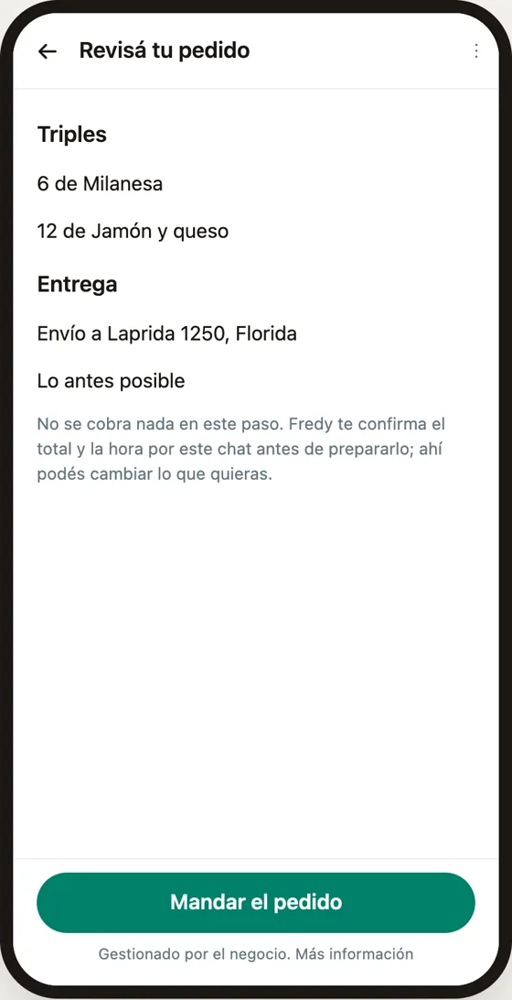
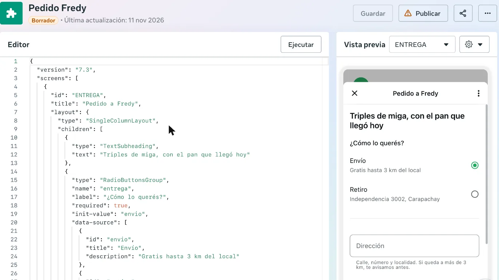

- Prototipo · no encargado
- IA conversacional
- 2026
Pedir por WhatsApp.
El pedido de Fredy, adentro de WhatsApp. El cliente escribe como le sale y la IA arma una tarjeta para confirmar. Lo que diseñé es qué puede componer el modelo, qué queda fijo y cómo se recupera cuando se equivoca.
Probar el prototipo
Lo que vi
El sitio de Fredy funciona: en su primer mes, los 5 pedidos por WhatsApp salieron de la barra fija del celular. Pero el sitio es un desvío. Arma un mensaje que el cliente podría escribir directo en WhatsApp, y a Fredy le llega como texto suelto que confirma a mano.
La idea
«Escribilo como te salga.»
Llevar el pedido adonde ya está la conversación, en dos capas. Una fija: el formulario de WhatsApp (Flow) con las reglas del negocio. Otra generativa: un modelo que traduce el texto libre a un formato cerrado. El modelo propone; las reglas y el cliente deciden. Si algo sale mal, siempre queda el formulario.
Qué decide la IA
| El modelo puede | El modelo no puede |
|---|---|
| Entender «jyq», «mila», «una docena», «a Laprida 1250», «para las 13» | Nombrar un sabor que no está en la carta |
| Proponer sabores, cantidades, entrega y hora | Calcular el precio: sale de la carta |
| Marcar una duda, con sus candidatos | Elegir entre candidatos: le pregunta al cliente |
| Devolver siempre el mismo formato | Confirmar el pedido, ni elegir qué se muestra |
Controles fijos
| Control | Si no pasa | Qué se muestra |
|---|---|---|
| El sabor está en la carta | Se descarta: no se muestra | — |
| Va de a 3 | Se redondea hacia arriba y se avisa | sigue |
| Hay un solo sabor posible | Lista con los candidatos, hasta 10 | elegir_sabor |
| Llega al mínimo de 6 | «El mínimo es 6 y van 3. ¿Sumás 3 más?» | falta_minimo |
| Se sabe si es envío o retiro | Dos botones | elegir_entrega |
| Hay dirección, si es envío | Se pide por el chat | pedir_direccion |
| Pasa todo | Tarjeta con el total de la carta: Confirmar o Cambiar algo | tarjeta_pedido |
| No es un pedido | Abre el formulario | abrir_flow |
Por dentro







Los límites de WhatsApp
| Límite | Cómo lo resolví |
|---|---|
| No hay contador + / − | Cada sabor es un par de listas: sabor y cantidad. Los 37 sabores tienen buscador y cada uno dice su grupo y su precio. |
| Las cantidades son texto: no se suman | Todo va de a 3, así que el mínimo de 6 se cumple si el primero tiene más de 3 o hay un segundo sabor. Esa condición prende el botón. |
| Sin servidor no hay listas que crezcan | Elegir un sabor abre lugar para otro, hasta 6. |
| Títulos de 30 letras | Un sabor se acortó: «Jamón, morrón, huevo, aceituna». |
| No hay pago dentro de WhatsApp en Argentina | La tarjeta dice que no se cobra nada y que Fredy confirma el total por el chat. |
Estado
- Pantallas del formulario
- 3
- Sabores de la carta
- 37
- Errores al validar en Meta
- 0
- Componentes posibles
- 6
El formulario está cargado y validado en Meta (Flow JSON 7.3). Mandarlo a un teléfono real espera la verificación del negocio. En el prototipo el modelo está simulado con reglas; el formato que devuelve, los controles y los componentes son los del diseño. Lo que sigue: un modelo real con salida estructurada al mismo formato.